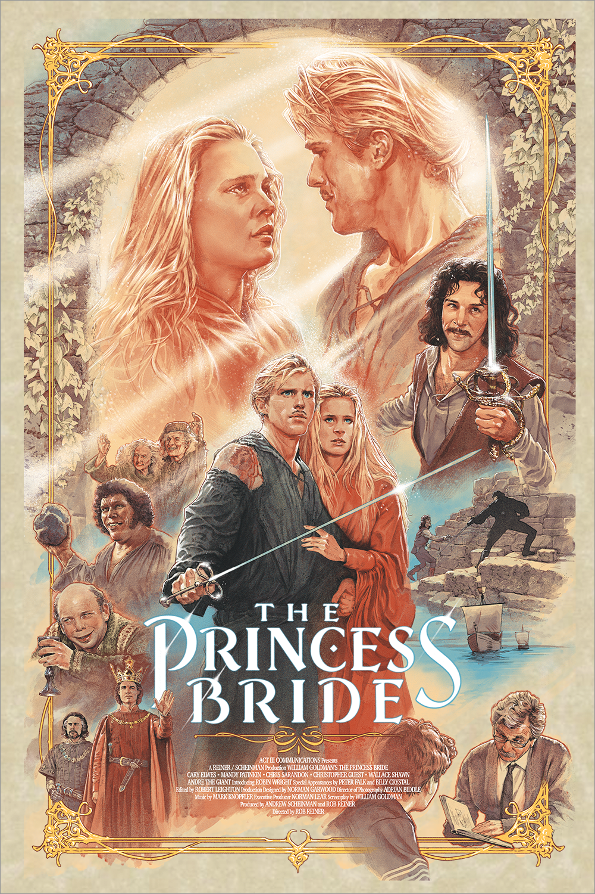
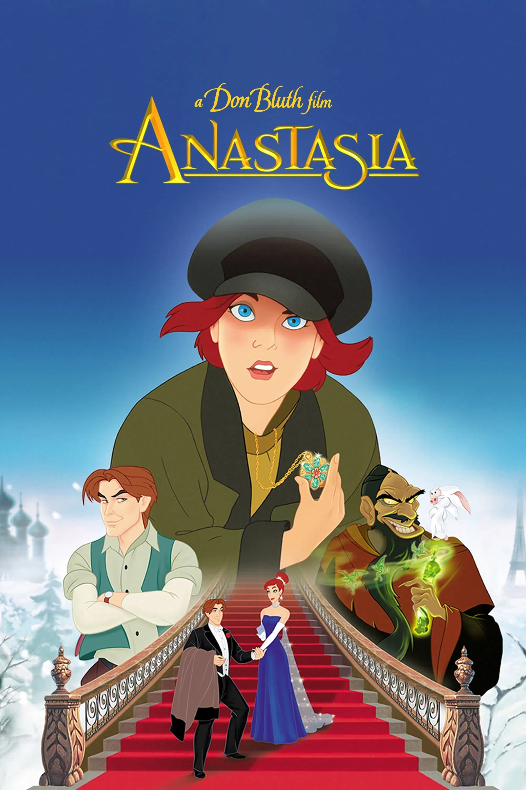
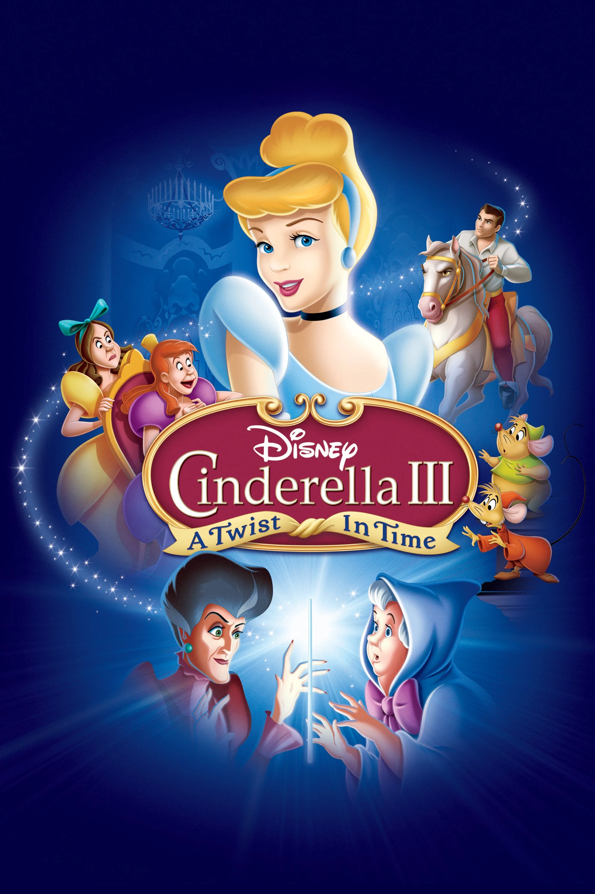
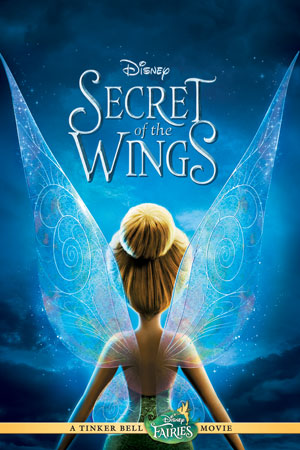
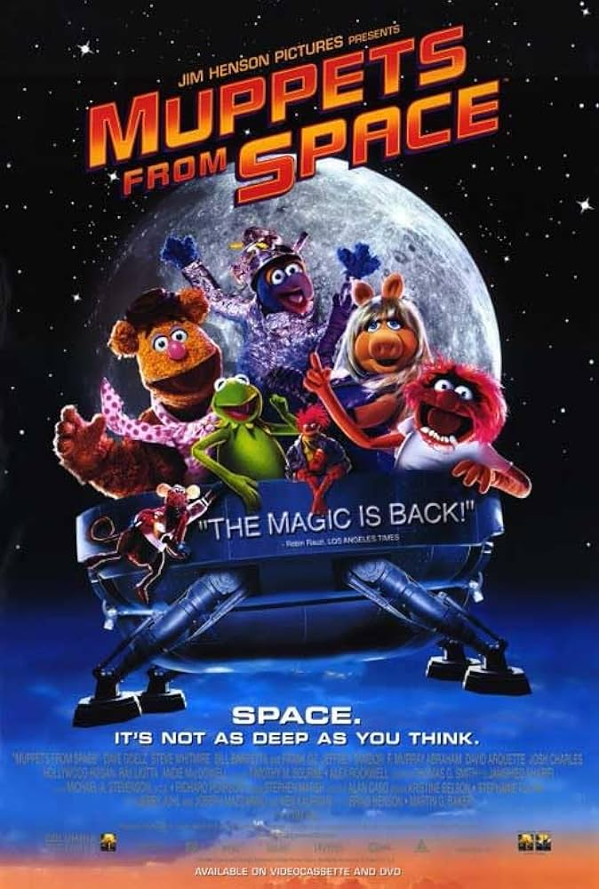

Labyrinth

Sarah must venture through a labyrinth to save her baby brother from the Goblin King, Jareth (played by David Bowie).
The Princess Bride
Westley must save his true love, Buttercup, from a marriage to Prince Humperdinck with the help of Fezzik and Inigo Montoya.
Anastasia
Anya learns about her past as the Duchess Anastasia from Dimitri and Vlad as they help her reunite with her grandmother.
Cinderella III: A Twist in Time
Lady Tremaine, using the Fairy Godmother's wand, turns back time to before Cinderella can try on the glass slipper and makes the prince think he loves Anastasia instead.
Revenge of the Sith

Anakin Skywalker is corrupted by Chancellor Palpatine, eventually betraying Padme and Obi-Wan to become Darth Vader.
Secret of the Wings
Tinkerbell becomes entranced by the mysterious Winter Wood, eventually crossing the border and meeting her sister, Periwinkle.
The Dead Poets Society

John Keating (played by Robin Williams) teaches English at an all-boys school, inspiring them through the expression: carpe diem, meaning "seize the day".
Forrest Gump

Forrest Gump proves to everyone he encounters that he is more than he appears as he goes through many life events, from serving in Vietnam to shrimp fishing.
A League of Their Own

Dottie and Kit join the All-American Girls Professional Baseball League, a real baseball league from World War II.
Thor: Ragnarok

Thor, Loki, Hulk, and Valkyrie must escape the planet Sakaar in order to save Asgard from Hela, the goddess of death.
Muppets From Space
Gonzo discovers that he is an alien and attempts to contact his family with the help of Rizzo and the rest of the Muppets.
The Music Man

Harold Hill cons the town of River City, Iowa by convincing them to buy into a boys' band that he never intends to lead.